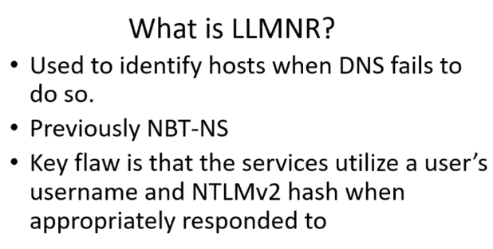

fcastle:local Admin in his own machine as well as paprker's machine
paprker:local Admin only in his own machine
LLMNR:Link Local Multicast Name Resolution
used to identify host when DNS fails
The Link-Local Multicast Name Resolution (LLMNR) is a protocol based on the Domain Name System (DNS) packet format
that allows both IPv4 and IPv6 hosts to perform name resolution for hosts on the same local link
First a system requests DNS for name resolution, if DNS fails, system sends broadcast to all devices in the network for name resolution



#responder -I eth0 -wdv
-I:interface which is eth0
-v:verbose

running few servers to check for any connections
run 2019 server and THEPUNISHER
log into punisher as
username:marvel\fcastle
password:P@ssword
go to file explorer

not necessary to type attacker IP,can type anything that cannt be resolved be DNS so it send LLMNR broadcast
attacker IP
and since we have servers running from responders, it will try to connect to them
we get NTLMv2 hash

crack hash using hashcat
#hashcat -m 5600 fcastlentlmv2hash.txt wordlist
-m:module
to find the module
#hashcat --help


and we get the password
always run password cracking on main OS coz password cracking utlises GPU not CPU
in windows
#hascat64.exe -m 5600 fcastlentlmv2hash.txt rockyou.txt

--------------------------------------------------------------------------------------------------------------------------------------------------------------------------------------------------------------------------------

if running hashcat again to find a password u already found before

use --show
LLMNR poising can be done with http as well